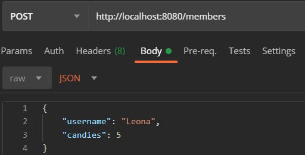
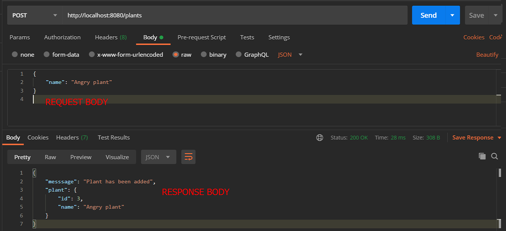
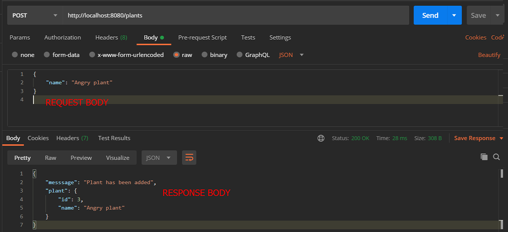

Rest API
REST
Representational state transfer - architectural style for distributed hypermedia systems
Principles
-
Client Server
Separate user interface from data storage. Client should only know resource URIs
-
Stateless
Server doesn't store information about previous HTTP requests from the client. Each request is treated as a new one. If application uses log in system, authorization token needs to be sent with every request.
-
Cacheable
Implemented on both server and client-side to improve performance
-
Uniform interface
API interface needs to be made public for customer. Should provide unchanging, standardized means of communication.
-
Layered system
Can contain multiple servers with different functionality and responsibility
-
Code on demand (optional)
Besides JSON and XML data, executable code can be returned
API
Application programming interface - enables data exchange between software products.
One software calls API of another software, specifying data requirements, and the other software returns the data or functionality that was requested.
RESTful API
API which is based on REST. Typically uses HTTP.
HTTP Methods
| Method\Endpoint | \members | \members\id |
|---|---|---|
| GET | get all members | get member by id |
| POST | add member | add member by id** |
| PUT/PATCH | update all members* | update member by id |
| DELETE | delete all members* | delete member by id |
* rarely used
** not used
Implementation examples with Node
Type of the method is always specified with the express app call. This function takes 2 parameters, where first one is endpoint and the 2nd one is a callback function with request and response input parameters. Request is then processed and sent back with the app response call. There are multiple ways of passing data through request and response parameters, which will be explained below with concrete examples.
GET
As mentioned above, we specify type of http method in the call. In this case it is app.get. There are 2 ways of sending data as a part of uri. We can include it as a path variable which is separated by a slash and symbolized with ":" in endpoint. We can then access it from the request as req.params.name.
app.get("/members/:id", (req, res) => {
let id = req.params.id;
let member = members.find(member => member.id === parseInt(id));
res.send({found: member});
});
Or we can pass data in form of a query string which we separate from the main part of the uri by ? and then specify key-value pairs separated by &.
We can then access it from the request as req.query.key.
app.get("/querystring", (req, res) => {
res.send({"key" : req.query.key});
})
POST
Post method is used for sending data while hiding it from the user. It is not shown in the uri but passed in request body. We however need to use json parser to access the data through request.body.key.

app.use(express.json());
app.post("/members", (req, res) => {
let member = new Member(id++, req.body.username, req.body.candies);
res.send({messsage: "Member has been added", member: member});
});
Postman
Tool used for sending HTTP requests to the server. As our web browser is able to send only get requests by changing uri, it is a helpful tool for testing purposes. We can specify type of the request, path variables or query string and get a response with data back.
 

In this picture we can see some main features of postman. At the top left corner, we can specify our http method. Next we can specify our URI including path variables together with query string. To make things easier, we can specify all the key-value pairs of querystring below the uri. After sending the request, we get the response back, which we can see at the bottom.
Sometimes we need to specify also body of the request. For example when using post or put/patch methods. Postman makes it easy for us and lets us write our own body, which will be sent together with request. We have also several types of data available. At the bottom, we can again see the response body from the server.